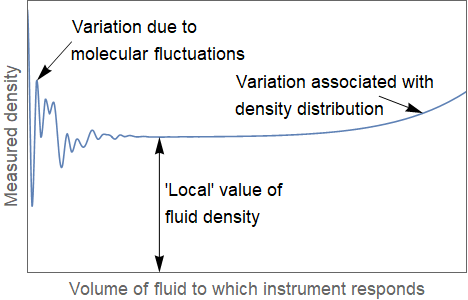

Introduction
25. Introduction#
Fluid dynamics is the study of flow. Since anything that flows can be thought of as a fluid, this field of study covers a tremendous range of applications, including aerodynamics, meteorology, hydraulics, oceanography, astrophysical dynamics, acoustics, hemodynamics (blood flow) and mucus flows. Principles of fluid dynamics have even been applied to the study of granular flows, such as dry sand, vehicular traffic and crowd dynamics.
Despite the vast range of applications, most of these phenomena can be examined by just three unifying principles:
Conservation of mass
Conservation of momentum
Conservation of energy
For many flows (this course), we can neglect thermodynamic effects, and in that case we can also get by without conservation of energy.
The continuum hypothesis
So that we can use the tools of calculus, we treat the fluid as if it were continuous in structure and we regard physical quantities as locally uniform. This also means we can treat gases and liquids in the same way, since the equations of motion are independent of the particle structure.
An illustration of the idea is shown below, applied to measurements of density. We ignore molecular fluctuations, and consider a locally averaged measure of density based on the mean free path between atoms.

{kind=link}
In actuality, the concept of “density” does not apply very meaningfully at the microscopic level, since the density at each point is defined by either being “inside” or “outside” an atom.
About this book:
In chapter 26 we introduce some of the mathematical ideas that are required to discuss and mathematically analyse fluid behaviours.
In chapter 27 we consider different ways of describing fluid motion and distinguish between streamlines and particle paths.
In chapter 28 We introduce the important concepts of divergence and vorticity from a mathematical and physical (fluid) perspective
In chapters 29 the equations of motion are introduced from first principles and given in vector and component form.
In chapter 30 The concept of viscosity is given a detailed treatment, through which we start to consider the interesting behaviours of some fluids such as ketchup, paint, and blood.
In chapter 31 we begin to consider how scaling arguments can be used to compare the results of different experiments and to simplify the theory by establishing rational ways to make approximations.
In chapters 32 we look at the steady form of the Navier-Stokes equations and we derive flow profiles for some simple geometries.
In chapter 33 we examine the concept of scalar potential in more detail, in preparation for the following chapters.
In chapter 34 we derive Bernoulli’s equation for the inviscid (Euler) case, which relates pressure and velocity along a streamline.
In chapter 35 it is shown that vorticity can only arise in a viscous flow, and that by neglecting viscosity we encounter the unphysical result that an aeroplane can fly without experiencing any drag. Resolving the paradox helps us to understand where lift comes from.
In chapter 36 we briefly introduce techniques that can be used to investigate nearly steady flows and to develop models of laminar-turbulent transition. We also introduce the important concept of a boundary layer.
In chapters 37-38 we take a brief look at water waves and sound waves. These two types of waves are generated by very different mechanisms. Surface water waves are gravity driven and can be treated by assuming that the fluid is both incompressible and irrotational. Sound waves are pressure driven and require compressibility to be taken into account.
In chapters 39-40 we look at some geophysical phenomena that relate to rotating fluids such as hurricanes, tornadoes and ocean gyres. We also explain the famous “tea leaf paradox”. The material in these two chapters it is not strictly necessary for this course, and could be skimmed or skipped entirely, though it will be discussed in lecture.
In case of errors
If you spot anything in the notes that seems suspect, please let me know so that it can be corrected or explained.
–Ella.